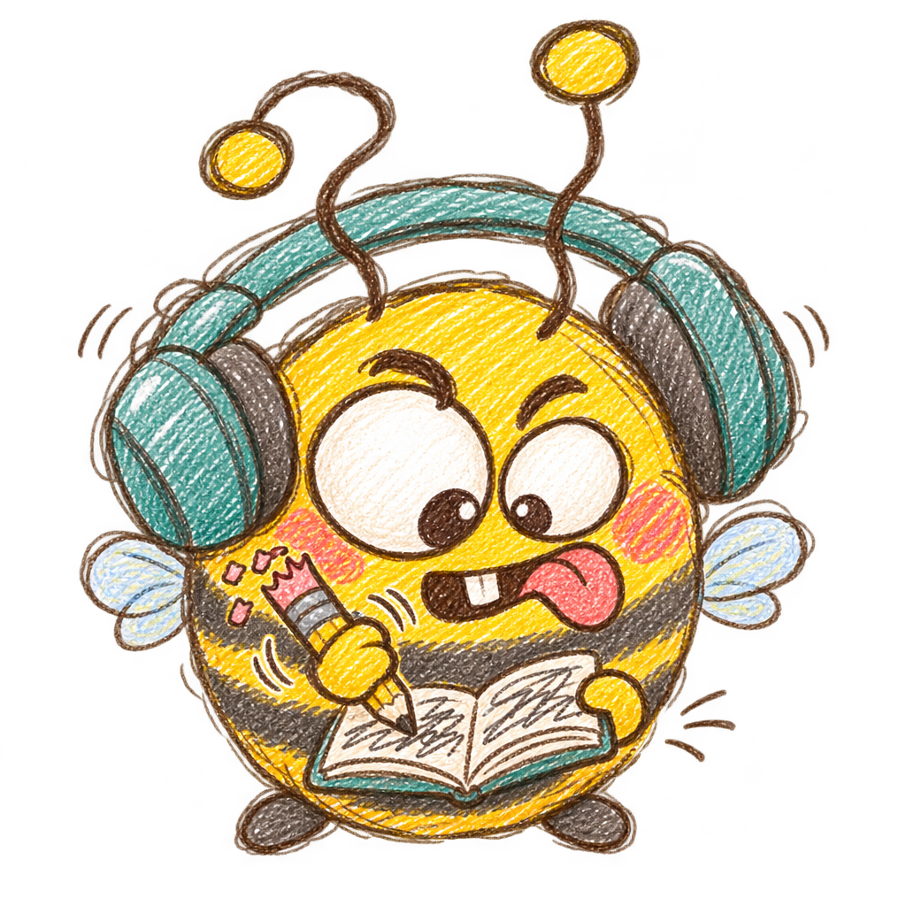

春季上新计划会

确定春季上新以亚麻系列为主推，拍摄定在 3 月 6 日，推广预算上限 12 万。
上月转化下降主要因为商品图太平、手机端尺码表难找，两项都安排了负责人。
上月转化下降主要因为商品图太平、手机端尺码表难找，两项都安排了负责人。
议题
01
拍摄排期
00:03
样衣 3 月 3 日到货
拍摄 3 月 6 日，预留 1 天修改
02
上月转化下降的原因
00:52
结论
1
拍摄定在 3 月 6 日
00:24
2
推广预算上限 12 万
00:37
3
亚麻系列做主推故事
01:58
我补一句：预算拆成拍摄 8 万 + 投放 4 万
人名和术语
Linen collection亚麻系列Hero story主推故事Mia摄影
✓ 纪要写好了 · 10:32 完成 · 10 句 · 3 位发言人
›在这场会议里找…
⌘F 搜索 · ⌘R 开始听 · 点时间跳到原话 · 双击纪要直接改
11 月 20 日 · 星期四

菲比
把纪要写好了
本场
发言人|||3
结论|||3
待办||2
原话卌卌10
待办
☐改版手机端尺码表，下周三前给大家看 · 你
☐周五前确定影棚 · Mia
录音12:40 / 32:00
点铅笔从这里接着听